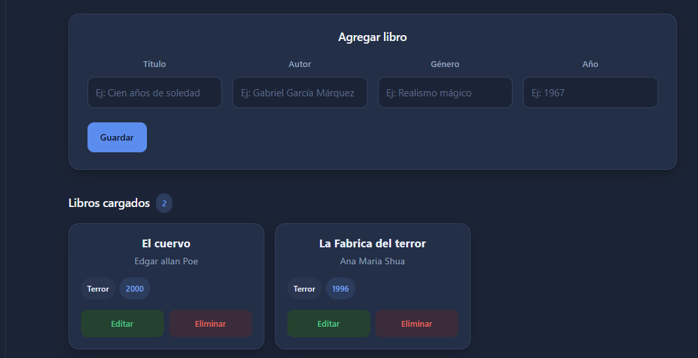

CRUD Biblioteca
Aplicación web simple para gestionar una colección de libros: se carga título, autor, género y año, y cada libro se puede editar o eliminar. Backend en Flask con base de datos MySQL y frontend en React.
Ver código en GitHub